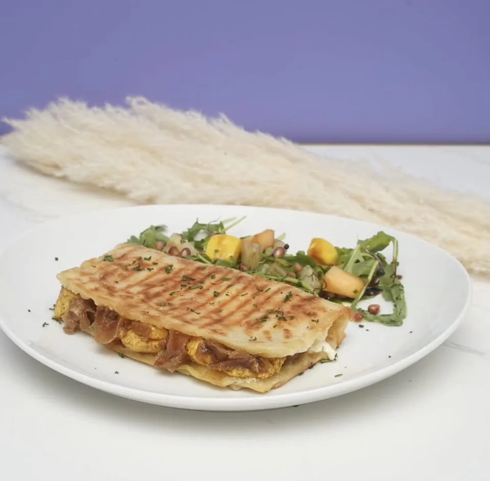
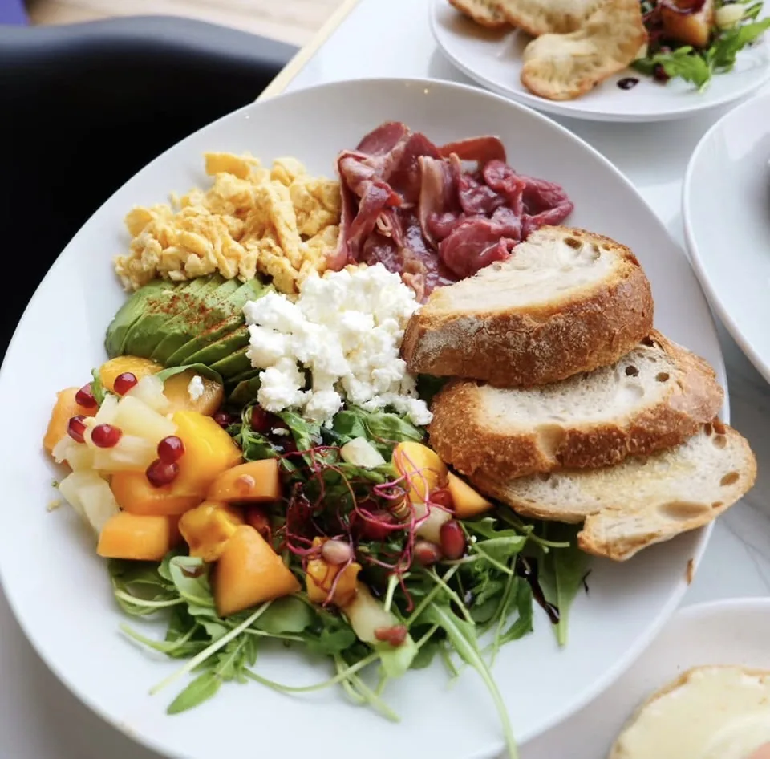
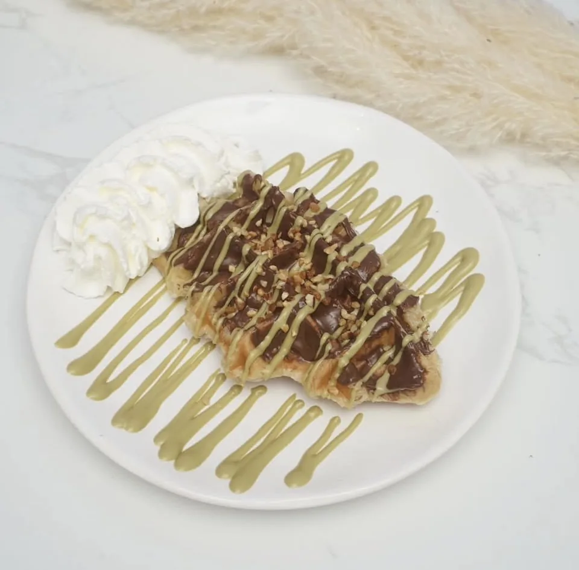
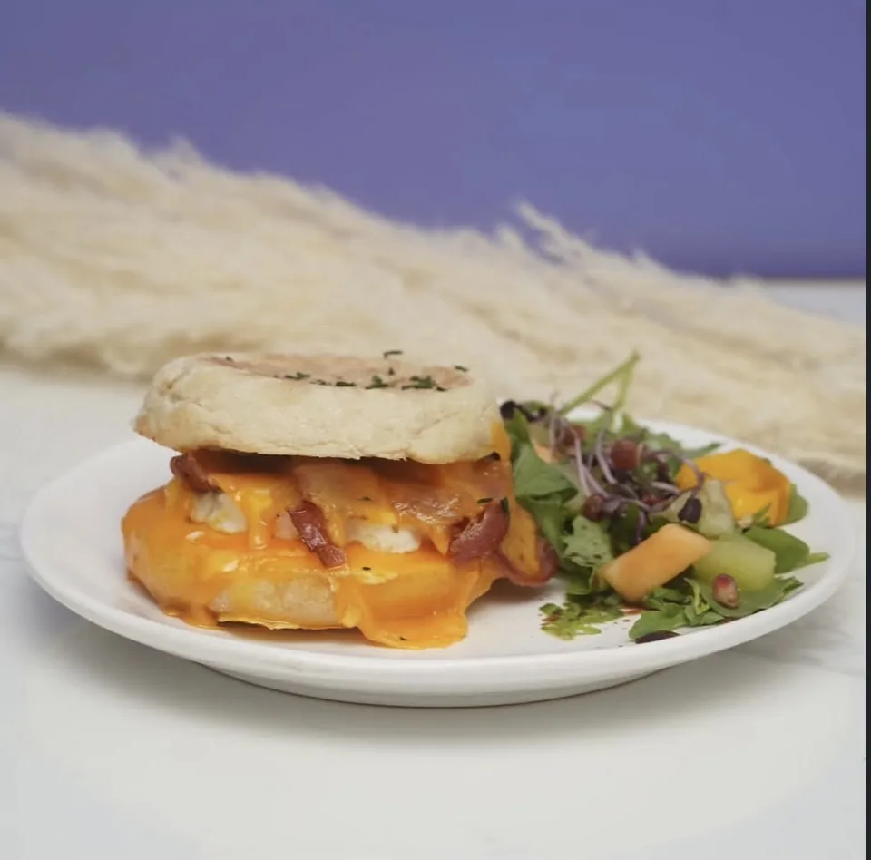
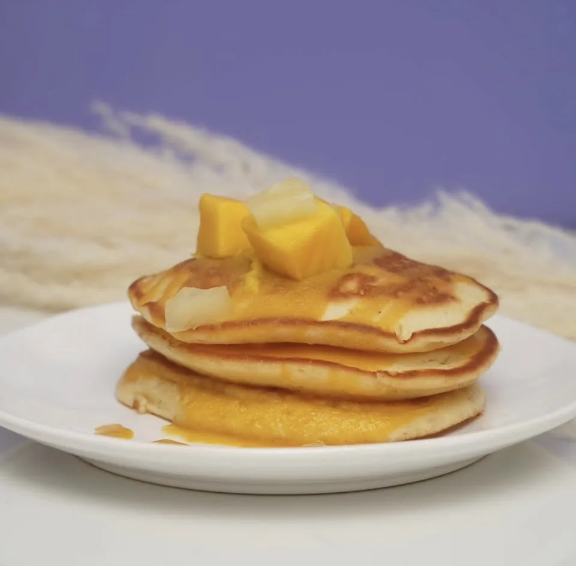

Best-seller
Pancakes
Moelleux et généreux : banane, fruits frais, sirop d'érable et chantilly.
9,50 €🥞 Brunch fait maison · Pessac
Produits frais, recettes maison, pancakes généreux, œufs bénédictes, brunchs salés et sucrés. Ici, tout est fait maison, pour le plaisir du goût.
Les stars de la maison
Les plats que nos habitués commandent les yeux fermés.
Moelleux et généreux : banane, fruits frais, sirop d'érable et chantilly.
9,50 €
Msemen grillé farci, oignons confits, au choix poulet, viande, saumon ou œufs.
dès 12,90 €
Œufs, feta, bacon ou saumon, avocat, roquette, fruits du moment et tartines.
14,50 €
Gaufre à base de pâte à croissant, nappage chocolat-pistache et chantilly.
6,90 €
Muffin rond, œuf fondant, cheddar et bacon croustillant.
7,90 €
Nappage fruit de la passion, mangue et ananas. Aussi : Nutella, caramel beurre salé…
9,50 €Notre promesse
Pancakes, sauces, pâtes, confitures… nos recettes sont préparées sur place, chaque jour.
Des ingrédients sélectionnés avec soin pour des assiettes généreuses et savoureuses.
Un lieu convivial et familial où l'on prend le temps de savourer son brunch.
@brunchareafr
Suivez nos dernières créations sur Instagram.
Horaires
Réservation & commande
Une table pour le week-end ? Réservez en ligne en quelques secondes via TheFork. Envie de brunch à la maison ? Commandez sur Uber Eats.
Pour les groupes et événements privés, appelez-nous directement.
Ils adorent leur brunch chez nous
La note moyenne parle d'elle-même. Voici ce que disent nos clients.
« Le meilleur brunch de Pessac sans hésiter. Les pancakes sont énormes et tout est ultra frais. On reviendra ! »
« Accueil chaleureux, cadre cosy et des assiettes généreuses. Les œufs bénédictes sont à tomber. »
« Une vraie pépite. Le Dakasoula et le smash burger valent largement le détour depuis Bordeaux. »